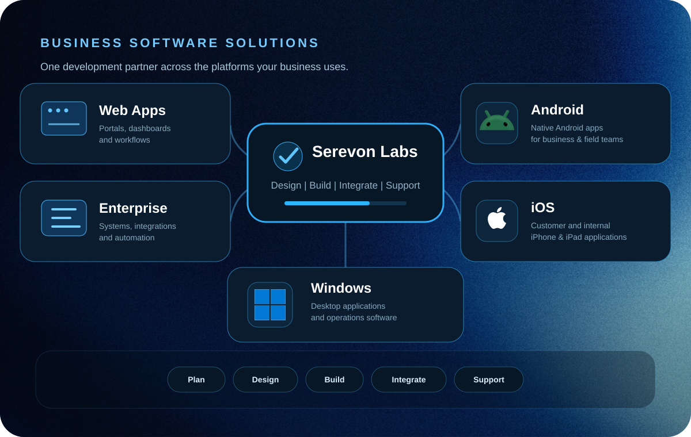

Web apps & portals
Customer portals, internal dashboards, workflow tools, APIs, and browser-based business applications.
Serevon Labs designs and builds practical software for businesses—from web applications and enterprise integrations to Android, iOS, and Windows solutions.
We can deliver a focused application or connect multiple systems into a larger solution, depending on what the business actually needs.
Customer portals, internal dashboards, workflow tools, APIs, and browser-based business applications.
Internal platforms, automation, line-of-business integrations, and software that connects existing tools.
Customer, field, and internal mobile experiences designed around the workflows that matter.
Desktop applications and operational tools for teams that need dependable software close to the work.
We start with the workflow, the people using it, and the outcome the business needs. Then we choose the technology that best supports that job.
That can mean a modern web application, a mobile companion, a Windows tool, an integration layer, or a connected set of systems working together.
About our studio →
A practical process keeps the technology tied to the outcome from the first conversation through release and iteration.
Clarify users, requirements, constraints, existing systems, and what success should look like.
Turn the workflow into a clear experience and architecture before complexity starts accumulating.
Build the right components, integrations, and interfaces with reliability and maintainability in mind.
Deploy, learn from real use, and improve the parts of the product that create the most value.

A focused Android recording experience.
ContinuCam is a Serevon Labs product built around dependable capture, practical controls, secure on-device storage, and a clean everyday experience.
Tell us what your team is trying to accomplish and where the current process is getting in the way.